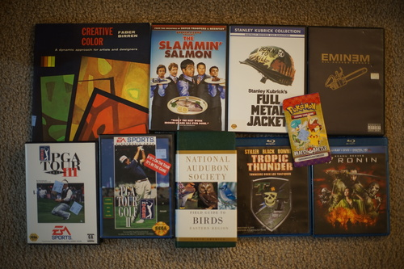
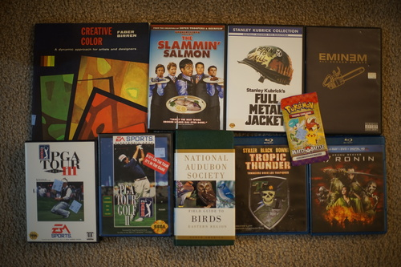

I got to go on a reactor date recently~ I was so excited that I thought it was a week earlier and almost woke Ryan up early for it! It was a blind group date actually. For some reason, there were only 2 women among 9 men. I guess we were just lucky ducks!
It was a lot smaller than I expected. For some reason I thought it would have to be a massive facility far out of town. Security was tight!! Thankfully, I didn't get a pat down. They wouldn't let you bring your phone or snacks in. Not fair because all the operators were using their phones and chugging energy drinks!!!
The equipment looked very old and little of it was digital. Is it possible to run 7segs without digital logic? I certainly wouldn't want to design that even if it was... And then replacing tubes! What a pain! They kept paper logs instead of digital logs and they weren't actually logging very much information. The newest looking equipment on the control panel was a monitor showing CCTV, a Motorola two-way radio, 3 black boxes with APC branding, and a telephone.
Someone with an operator license will have to email me and tell me how much of operating is sitting on your phone and how much is actually looking at the 50 different do-whoppers and readers. I'm very curious and was afraid to ask.
I hope you all get to view the beautiful blue light with your love someday! It was very cool to see.
 

Ryan bought it for me! Will I ever feel confident enough with drawing to actually start coloring? I hope so!
Mine~ Ryan will vouch for me: I called pulling a foil Fuecoco!!!